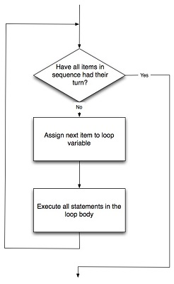

As a program executes, the interpreter always keeps track of which statement is about to be executed. We call this the control flow, or the flow of execution of the program. When humans execute programs, they often use their finger to point to each statement in turn. So you could think of control flow as "Python's moving finger". Control flow until now has been strictly top to bottom, one statement at a time. We call this type of control sequential. In Python flow is sequential as long as successive statements are indented the same amount. The for statement introduces indented sub-statements after the for-loop heading. Flow of control is often easy to visualize and understand if we draw a flowchart. This flowchart shows the exact steps and logic of how the for statement executes.

© Copyright 2018 LTC Tom Babbitt, Kyle King, Chip Schooler, Brad Miller, David Ranum, Originally created using Runestone Interactive.